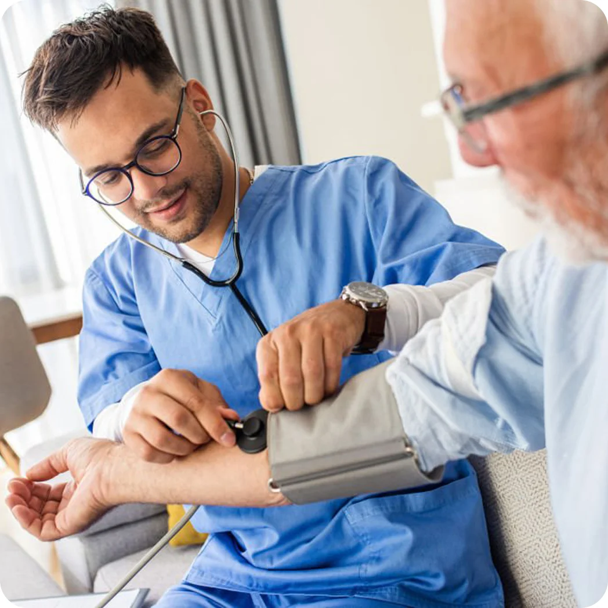

Dynamic & Fulfilling Work
Deliver essential care in the setting where patients most want to receive it — at home. Apply your skills with greater autonomy and the chance to learn.



At home and along healthcare journeys, you can make a difference in their lives.
Deliver essential care in the setting where patients most want to receive it — at home. Apply your skills with greater autonomy and the chance to learn.
Work with colleagues who share your passion and purpose, and lean on an integrated team of healthcare professionals who empower patient care.

Develop meaningful relationships and stronger bonds with the people you serve, while witnessing firsthand the impact of your work over time.

Home care empowers people to live with agency to make choices based on their desires.

Registered Nurse and Clinical Leader
Care at Home Advocate and Leader
Care at Home Advocate and Caregiver

Care at Home Advocate and Leader
Registered Nurse and Technology Leader
Hospice Medical Director
Learn more about workplace safety in care at home or view the Alliance’s safety resources.


Whether you have questions about care at home or are ready to make a career change, feel free to email us at communications@allianceforcareathome.org
email us